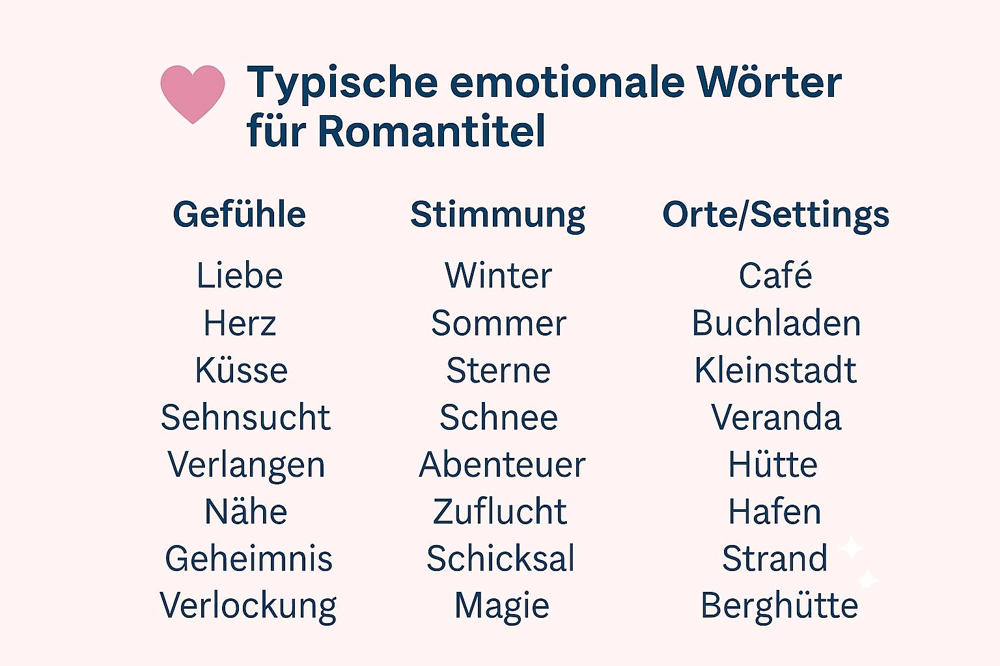

Der Titel entscheidet, ob jemand überhaupt hinschaut
Ich habe im Laufe meiner Bücher viele meiner eigenen Titel mehrfach überarbeitet. Manchmal schon vor dem Start, manchmal erst nach einigen Monaten. Und immer habe ich dabei die gleiche Lektion gelernt: Der Titel ist das, was die meisten Leser als erstes wahrnehmen. Oft sogar noch vor dem Cover. Noch weit vor dem Klappentext oder der Leseprobe.
Der Titel erzeugt ein Bild im Kopf. Oder eben nicht. Und genau dieses Bild entscheidet oft schon darüber, ob jemand sich das Buch überhaupt näher ansieht.
Meine erste Lektion
Mein erster Romantitel klang damals viel zu austauschbar. Ich wollte, dass er charmant und cozy klingt. Aber schon nach den ersten Wochen mit kaum Verkäufen merkte ich: Irgendetwas fehlt.
Ich habe in Lesergruppen nach ehrlichem Feedback gefragt. Eine Leserin brachte es ziemlich genau auf den Punkt:
Der Titel sagt mir nicht wirklich, was mich erwartet. Ich wusste nicht, ob das eher ein Weihnachtsroman, eine romantische Komödie oder vielleicht sogar was völlig anderes ist.
Erst als ich den Titel stärker auf Setting und Atmosphäre ausgerichtet habe — Kleinstadt, Winter, Buchcafé, Liebesgeschichte — spürte ich eine ganz andere Resonanz. Plötzlich waren die Klickzahlen deutlich besser. Der neue Titel sagte den Lesern unbewusst, was sie erwartet.
Was ich über gute Romantitel gelernt habe
Es gibt keine perfekte Formel. Aber es gibt typische Muster, die immer wieder funktionieren:
- Emotionale Schlüsselwörter: Begriffe wie Herz, Liebe, Küsse, Winter, Sommer, Café, Geheimnis, Verlockung erzeugen sofort Bilder. Sie geben Lesern einen schnellen emotionalen Anker.
- Setting-Wörter: Ortsnamen, Jahreszeiten, vertraute Umgebungen helfen sofort, die Atmosphäre einzuordnen. Winterträume in einer Kleinstadt funktioniert besser als nur Liebesgeschichte irgendwo.
- Serientaugliche Strukturen: Gerade bei Reihen hilft eine klare Titelstruktur mit Bandnummern und wiederkehrenden Begriffen. Leser erkennen sofort den Zusammenhang.
- Keine gekünstelten Kunstbegriffe: Überkreative Phrasen wirken oft bemüht. Klare, lebendige Begriffe bleiben besser im Kopf und sprechen direkter an.
Die SciFi-Falle bei Romance
Ich schreibe hin und wieder auch SciFi-Romance. Und dort habe ich anfangs einen anderen typischen Fehler gemacht.
Mein erster Versuch hatte einen sehr technischen Titel. Klingt nach Military-SciFi, nicht nach Liebesgeschichte. Einige Leser sagten später:
Ich dachte, das wäre harter SciFi-Thrillerstoff. Dass da auch Romantik drinsteckt, habe ich erst beim Lesen bemerkt.
Seitdem achte ich viel bewußter darauf, dass der Titel schon klar signalisiert: Hier gibt es beides — Spannung und Gefühl.
Worauf ich heute bei Titeln achte
- So kurz wie möglich — maximal 4 bis 6 Wörter
- Optional ein emotionaler Untertitel
- Bei Reihen klare Bandzuordnung
- Keine Rätselspiele — Leser wollen eine Einladung, keine Überraschung
Was Leser tatsächlich wahrnehmen
In Testgesprächen mit Freundinnen habe ich es oft erlebt:
- Zuerst wird das Covermotiv erfasst (Winter, Häuser, Kaffee, Hund, Licht)
- Dann nur die ersten 2–3 Worte des Titels
- Der Subtitel wird oft erst beim genaueren Anschauen gelesen
Deshalb müssen die ersten Wörter sofort das Genre signalisieren.
Mein Fazit nach einigen Jahren Selfpublishing
Ein guter Romantitel muss dem Leser ein Versprechen geben: Hier findest du genau das Leseerlebnis, das du suchst.
Ich habe mit der Zeit gelernt, viel weniger an „kreative Originalität“ zu denken. Leser suchen Orientierung, keine Rätsel. Heute mache ich mir beim Schreiben meiner Titel viel weniger Stress. Ich stelle mir einfach vor, wie eine Leserin durch den digitalen Buchladen scrollt. Ihr Blick bleibt nur dort hängen, wo sie schon in den ersten Worten spürt: Das ist mein Genre, das ist meine Welt.
Wenn der Titel das schafft, dann hat er seinen Job gemacht. Wenn du es ganz bequem willst, probiere den Romance Titelgenerator aus, der kostet nichts.
Über Laura M. Whitford
Laura M. Whitford ist unabhängige Romanautorin mit einer Vorliebe für Contemporary und SciFi Romance. Seit sieben Jahren veröffentlicht sie ihre eigenen Bücher im Selfpublishing. Ihre Erfahrungen aus zahllosen Überarbeitungen von Klappentexten, Titeln und Covern teilt sie hier offen und ehrlich – ohne Marketing-Blabla, sondern aus der Praxis einer Indie-Autorin.